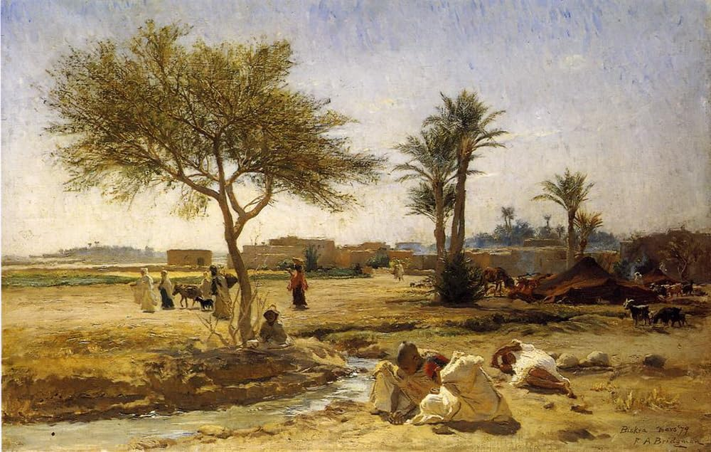
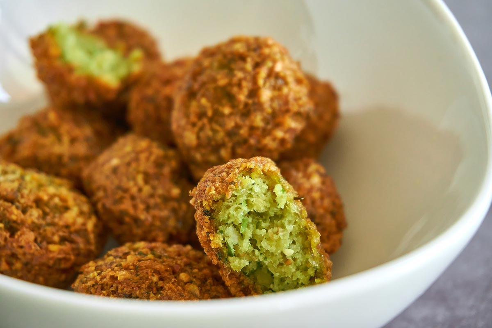
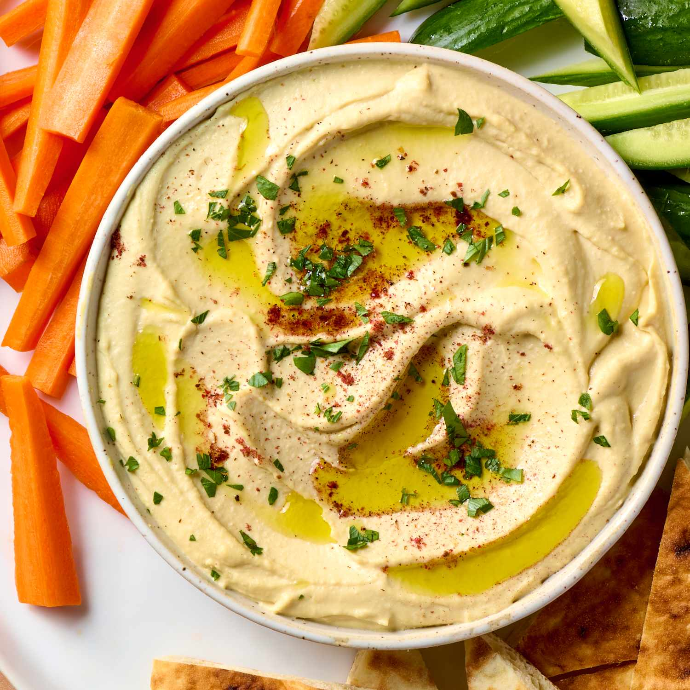
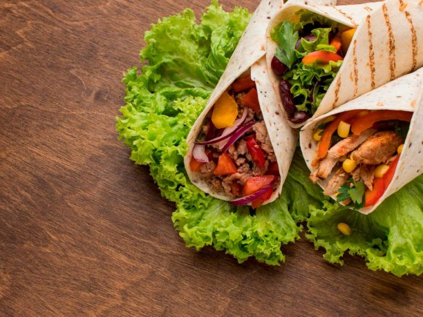

La cultura árabe es una de las más antiguas y ricas del mundo, con profundas raíces históricas, artísticas y espirituales que abarcan desde el norte de África hasta el Medio Oriente. Es una cultura marcada por la hospitalidad, el valor de la familia, el respeto por las tradiciones y una conexión muy especial con los sabores y aromas que emergen de su cocina.
La gastronomía árabe es un verdadero viaje sensorial. Utiliza ingredientes simples pero llenos de sabor, como el aceite de oliva, el cordero, las legumbres, los frutos secos, el yogur y especias como el comino, el zaatar, la cúrcuma y la canela. Cada plato cuenta una historia, ya sea un festín familiar alrededor del mansaf en Jordania, una merienda con meze en el Líbano o el inconfundible aroma del cuscús en el Magreb.
En esta página te invitamos a explorar el mundo de la cocina árabe a través de recetas auténticas y caseras. Desde los clásicos como el hummus, el falafel o el shawarma, cada receta es una oportunidad de acercarte a una cultura cálida y milenaria, donde compartir la comida es una forma de celebrar la vida.
Los falafel son croquetas fritas hechas de garbanzos molidos, hierbas y especias. Son perfectas como aperitivo o acompañamiento. Haz click aqui para ver la receta completa.
El hummus es un puré de garbanzos con tahini, ajo y limón. Es un dip delicioso que se sirve con pan pita o vegetales. Haz click aqui para ver la receta completa.
El shawarma es un plato de carne marinada y asada, servida en pan pita con vegetales y salsas. Es un favorito en muchas partes del mundo. Haz click aqui para ver la receta completa.
